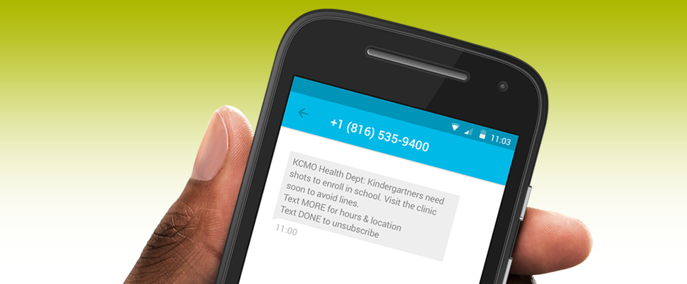

Text Messaging for Public Health

Welcome to Text Messaging for Public Health. This guide will walk you through the major steps to creating a text message program for your health-related organization.
We built this site because text messages are an amazing way to reach out to the people you serve. Research shows that text messages are an effective means of outreach. Read more about using text messages for appointment reminders, smoking cessation, and early childhood literacy.
But often when people go to set up text messages for their own programs, they have a lot of questions. How do I do this if I don't know how to code? How much will this cost? How can I write my messages and still follow HIPAA? How can I make this an effective form of outreach for my community?
We know because we asked the same things when we built out text messaging reminders for the Kansas City Health Department. So we created this step by step guide to walk you through it.
This site was created by the 2016 Kansas City Code for America Fellows in partnership with the Kansas City, Missouri Health Department. It is authored by Rachel Edelman and Jessica Cole, with contributions by Kevin Berry. You can contact us at kcmo@codeforamerica.org. We welcome your questions and comments!
Thanks to our funders: Google Fiber, Robert Wood Johnson Foundation, REACH Healthcare Foundation, and Healthcare Foundation of Greater Kansas City.